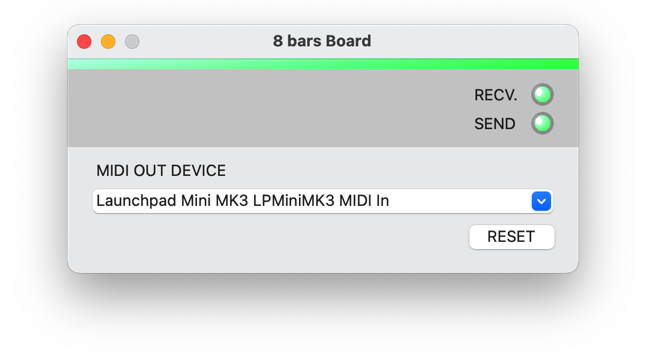
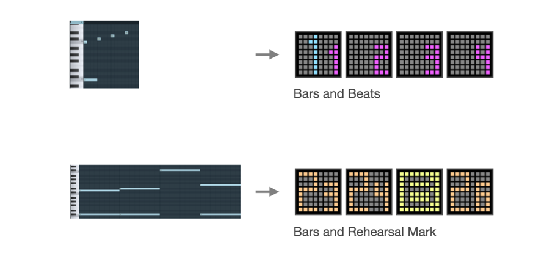
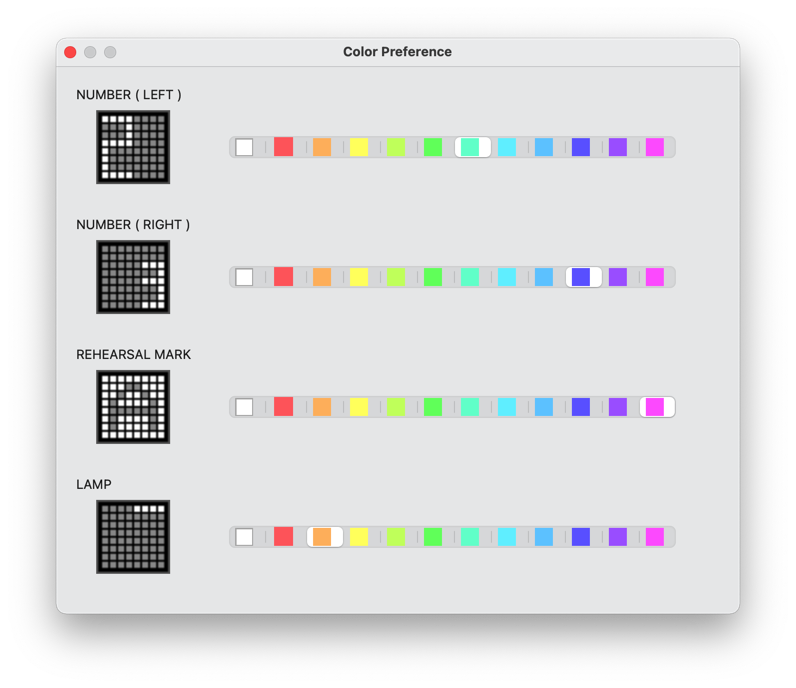

8 bars Board - User Manual Ver.1.0
About '8 bars Board'

'8 bars Board' is a tool for SNS music performance video creators to share bar sense with listeners.
8 bars Board works as a virtual MIDI device on your computer.
By connecting DAW and display device, you can display bars and beats on display device, controlled by the MIDI sequence on DAW.
Let's share with your listeners the bar structure of your song by displaying the bars and beats at the tempo of your music.

NOTE : This product does not include DAW and display device.
System requirement
This software is an application that runs on macOS.
- Supported OS : macOS 11(Big Sur), macOS 12(Monterey)
- The operation check was performed on an Intel Mac.
Operation confirmed DAWs
Currently, the following DAWs have been confirmed to work.
- Logic Pro v10.6.0
- FL Studio 20.9
- Studio One Prime v5.5.0
- Cubase LE 11
NOTE : Your DAW must have the ability to output MIDI to an external device.
　(GarageBand is not supported because it does not have the ability to output MIDI to external devices.)
Supported display devices
As display device, only NOVATION's Launch Pad mini MK3 is supported.
How to use
1. Start up your DAW, 8 bars Board, and display device.
2. As the MIDI output of your DAW, select "8 bars Board - MIDI In".
For more information about setting the MIDI output, refer to the manual of your DAW.
3. As the MIDI output of 8 bars Board, select the display device from the list for the output destination.
4. When you play a note on your DAW, via 8 bars Board, the pitch-based content is displayed on your display.

5. By programming MIDI sequence on your DAW, you can control display device according to the tempo of your music.
MIDI Sequence Example
The following is an example of a MIDI sequence.
There are no specific rules, so please try various methods.

Mapping between pitch and display content
The pitch of the note determines what is displayed on the display device.
The following is a mapping between the range of pitches and the groups of displayed content.

Change color
The colors shown on the display device can be changed from the Settings dialog.
( Menu Bar > Color > Color Preference )
The color can be set for each display content group.

Supplement
- If the connection with the display device does not work, press the "RESET" button.
- If your display doesn't clear when your DAW sequence is stopped, check your DAW settings and try changing it to send MIDI sync signals (MIDI Start / Stop / Continue).
Others
- If you want to uninstall it, delete this application from the Application folder.
- yamahito software holds the copyright of 8 bars Board.
History
- 02/01/2022 Ver1.0 Initial Release
Web: https://yamahito-software.github.io/docs/
Mail: 
Copyright 2022 yamahito software